El control de temperatura en refrigeración industrial no es solo encender y apagar un compresor: es mantener la cadena de frío dentro de rangos estrechos que preserven la calidad del producto, cumplan normativas sanitarias y minimicen el consumo energético. Un controlador de calidad industrial debe medir con precisión, reaccionar rápido, registrar históricos y comunicarse con sistemas superiores. Full Gauge es la marca brasileña que ha demostrado durante décadas que la tecnología avanzada no necesita ser compleja ni cara.
En Ecuclima distribuimos instrumentos electrónicos Full Gauge para monitoreo y control de temperatura, presión y humedad en sistemas de refrigeración industrial y comercial en Ecuador. Nuestro stock incluye controladores para cámaras frigoríficas, túneles de congelación, hornos industriales y chillers, junto con sensores de presión 4-20 mA, sondas NTC e interfaces de comunicación RS-485 compatibles con el software Sitrad.
Controladores de temperatura para cámaras y túneles
Combinan algoritmos de control PID con funciones especializadas para refrigeración: gestión de desescarche por tiempo, temperatura o combinado, alarmas de alta y baja temperatura con retardo configurable, y salidas para compresor, ventilador de evaporador, resistencia de desescarche y luz de cámara.
- MT-512E-2HP: controlador para cámaras frigoríficas, dos salidas a relé (compresor y desescarche), sensor NTC incluido, display LED de 3 dígitos. Rango -50°C a +90°C.
- MT-530 Super: con función de humidificación y deshumidificación, ideal para cámaras de maduración de frutas, secaderos de granos y aplicaciones donde la humedad relativa es tan crítica como la temperatura.
- TO-751B y TO-711B: especializados para hornos industriales y túneles de congelación, con capacidad de gestionar múltiples etapas de temperatura y tiempos de proceso. El TO-751B incluye salida para variación de frecuencia del ventilador.
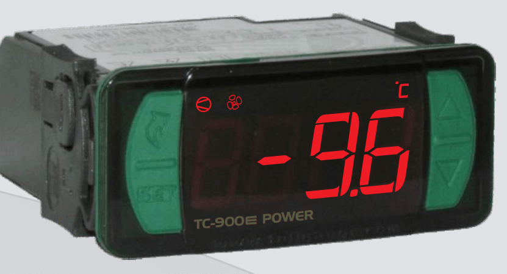
Controlador de Temperatura MT-512E-2HP
Cotizar por WhatsApp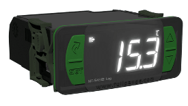
Control de Temperatura y Humedad MT-530 Super
Cotizar por WhatsApp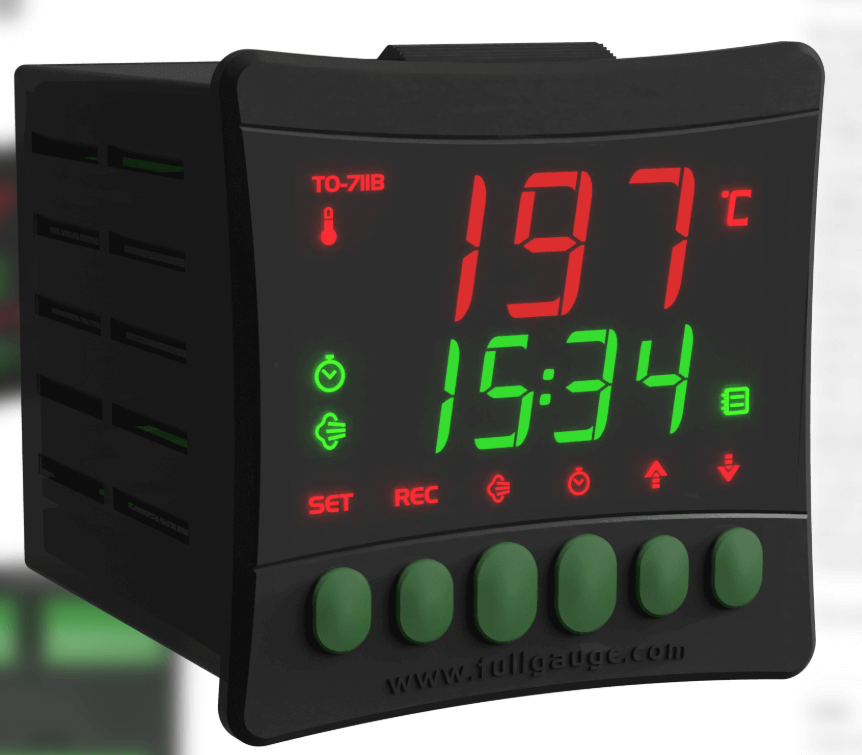
Controlador de Temperatura y Humedad TO-751B
Cotizar por WhatsApp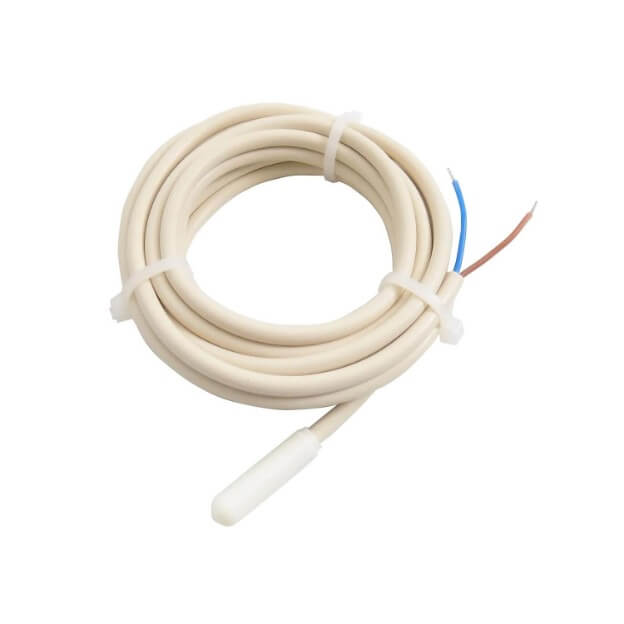
Controlador Temperatura Horno TO711B
Cotizar por WhatsApp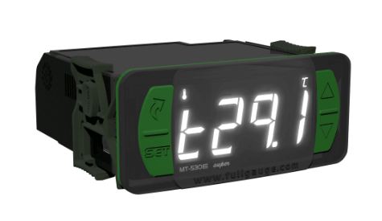
Control Digital TC-900L 12/24V
Cotizar por WhatsApp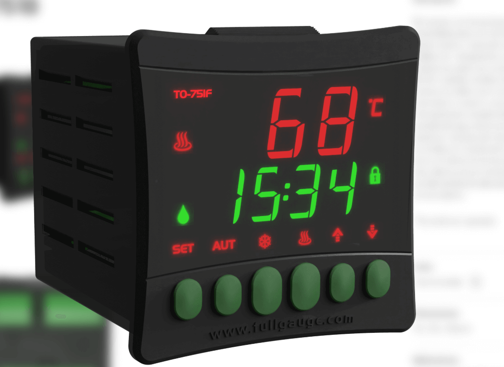
Control Digital MT-543E Log
Cotizar por WhatsApp
Controlador de Temperatura TIC-17S
Cotizar por WhatsAppSensores y transductores de presión
La presión es la variable que más rápido indica un problema en un sistema de refrigeración: una caída de presión de succión puede significar falta de refrigerante, una obstrucción en el filtro o una válvula de expansión atascada. Los sensores de presión Full Gauge transforman esa variable mecánica en una señal eléctrica estandarizada 4-20 mA que cualquier PLC o controlador puede interpretar.
- SB69-500A / SB69-500V: transductores de 0 a 500 PSI con salida 4-20 mA, cuerpo de acero inoxidable y conexión SAE de 1/4". El modelo "A" es presión absoluta y el "V" presión manométrica.
- SB69-200V: versión de 0 a 200 PSI para sistemas de baja presión como evaporadores de CO2 o sistemas de vacío.
- Precisión ±0.5 % del span, respuesta en menos de 5 ms, protección IP65 para ambientes húmedos o con salpicaduras.
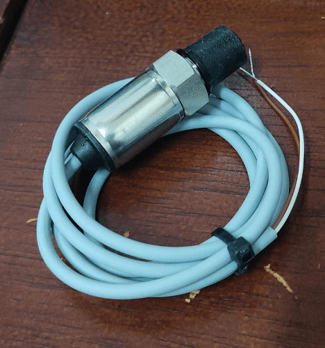
Sensor Transductor de Presión 0–500 PSI / 4-20 mA
Cotizar por WhatsApp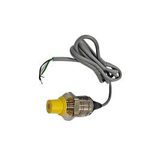
Sensor de Presión SB69-500A (0 a 500 PSI)
Cotizar por WhatsApp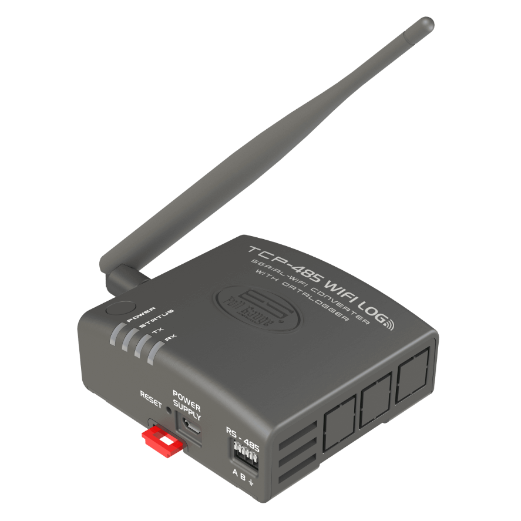
Sensor/Transductor SB69-500V (0–500 PSI)
Cotizar por WhatsApp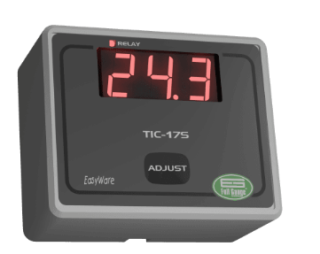
Sonda/Transductor SB69-200V
Cotizar por WhatsAppComunicación y monitoreo remoto
El control local de una cámara frigorífica ya no es suficiente cuando se gestionan diez, veinte o cincuenta puntos de frío. Las interfaces de comunicación Full Gauge permiten conectar controladores individuales a una red RS-485 y centralizar el monitoreo en una PC con el software Sitrad o en un sistema SCADA propio.
- TCP-485-04: interfaz TCP/IP a RS-485 que permite acceder a los controladores desde cualquier navegador o aplicación móvil, con alarmas por email o SMS.
- CONV.32: conversor USB a RS-485 para configuración inicial de controladores desde una laptop de mantenimiento, sin necesidad de red Ethernet.
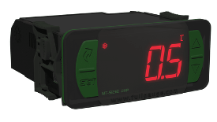
Control Interfase TCP-485-04
Cotizar por WhatsApp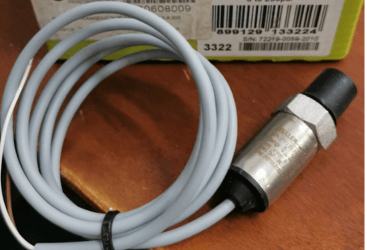
Control Interfase CONV.32
Cotizar por WhatsApp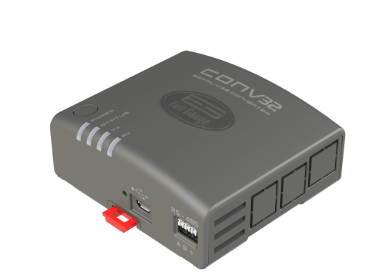
Caja Plástica para Control Sobrepuesta
Cotizar por WhatsAppSondas NTC y accesorios
La precisión del control depende de la calidad del sensor. Las sondas NTC Full Gauge que distribuimos tienen coeficiente Beta de 3.470 K a 25°C, con tolerancia ±0.5°C en el rango de trabajo. Disponemos de sondas de acero inoxidable para inmersión en fluidos, sondas con vaina de cobre para contacto con superficies, y sondas de aire con cabezal de plástico para montaje en ductos o cámaras.
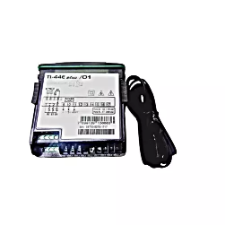
Sonda SB70 2.5m Blanca
Cotizar por WhatsApp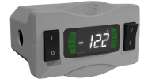
Termómetro Digital TI-44E Plus
Cotizar por WhatsApp¿Necesita modernizar el control de sus cámaras o integrar monitoreo remoto? Cuéntenos cuántos puntos de frío tiene, qué variables necesita controlar y si requiere comunicación a sistema central. Le diseñamos la arquitectura de control y le cotizamos equipos con stock inmediato.
Preguntas frecuentes
¿Qué controlador Full Gauge necesito para una cámara de conservación?
El MT-512E-2HP cubre la mayoría de cámaras frigoríficas estándar, con dos salidas a relé para compresor y desescarche. Para cámaras de maduración o secado donde la humedad importa tanto como la temperatura, recomendamos el MT-530 Super.
¿Puedo monitorear varias cámaras desde un solo lugar?
Sí, conectando los controladores a una red RS-485 con la interfaz TCP-485-04 se centraliza el monitoreo en el software Sitrad o en cualquier navegador web, con alarmas por email o SMS.
¿Los sensores de presión Full Gauge sirven para cualquier PLC?
Sí, entregan una señal estandarizada 4-20 mA que cualquier PLC o controlador industrial puede leer directamente, sin necesidad de módulos de conversión adicionales.
¿Qué precisión tienen las sondas NTC que distribuyen?
Coeficiente Beta de 3.470 K a 25°C, con tolerancia de ±0.5°C en el rango de trabajo. Hay versiones de acero inoxidable para inmersión, con vaina de cobre para superficies, y de aire para ductos o cámaras.